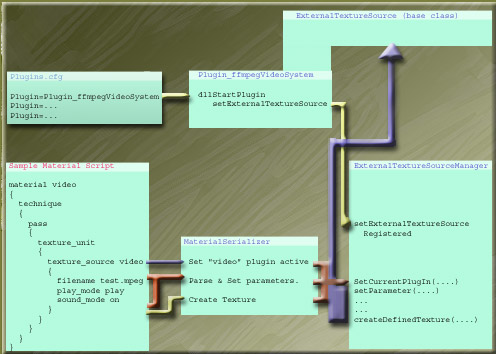

6. External Texture Sources
Introduction
This tutorial will provide a brief introduction of ExternalTextureSource and ExternalTextureSourceManager classes, their relationship, and how the PlugIns work. For those interested in developing a Texture Source Plugin or maybe just wanting to know more about this system, take a look the ffmpegVideoSystem plugin, which you can find more about on the OGRE forums.
What Is An External Texture Source?
What is a texture source? Well, a texture source could be anything - png, bmp, jpeg, etc. However, loading textures from traditional bitmap files is already handled by another part OGRE. There are, however, other types of sources to get texture data from - ie. mpeg/avi/etc movie files, flash, run-time generated source, user defined, etc.
How do external texture source plugins benifit OGRE? Well, the main answer is: addding support for any type of texture source does not require changing OGRE to support it... all that is involved is writting a new plugin. Additionally, because the manager uses the StringInterface class to issue commands/params, no change to the material script reader is needs to be made. As a result, if a plugin needs a special parameter set, it just creates a new command in it's Parameter Dictionary. - see ffmpegVideoSystem plugin for an example. To make this work, two classes have been added to OGRE: ExternalTextureSource & ExternalTextureSourceManager.
ExternalTextureSource Class
The ExternalTextureSource class is the base class that Texture Source PlugIns must be derived from. It provides a generic framework (via StringInterface class) with a very limited amount of functionality. The most common of parameters can be set through the TexturePlugInSource class interface or via the StringInterface commands contained within this class. While this may seem like duplication of code, it is not. By using the string command interface, it becomes extremly easy for derived plugins to add any new types of parameters that it may need.
Default Command Parameters defined in ExternalTextureSource base class are:
- Parameter Name: "filename" Argument Type: Ogre::String
Sets a filename plugin will read from
- Parameter Name: "play_mode" Argument Type: Ogre::String
Sets initial play mode to be used by the plugin - "play", "loop", "pause"
- Parameter Name: "set_T_P_S" Argument Type: Ogre::String
Used to set the technique, pass, and texture unit level to apply this texture to. As an example: To set a technique level of 1, a pass level of 2, and a texture unit level of 3, send this string "1 2 3".
- Parameter Name: "frames_per_second" Argument Type: Ogre::String
Set a Frames per second update speed. (Integer Values only)
ExternalTextureSourceManager Class
ExternalTextureSourceManager is responsible for keeping track of loaded Texture Source PlugIns. It also aids in the creation of texture source textures from scripts. It also is the interface you should use when dealing with texture source plugins.
Note: The function prototypes shown below are mockups - param names are simplified to better illustrate purpose here...
Steps needed to create a new texture via ExternalTextureSourceManager:
- Obviously, the first step is to have the desired plugin included in plugin.cfg for it to be loaded.
- Set the desired PlugIn as Active via AdvancedTextureManager::getSingleton().SetCurrentPlugIn( String Type ); -- type is whatever the plugin registers as handling (eg. "video", "flash", "whatever", etc).
- Note: Consult Desired PlugIn to see what params it needs/expects.
Set params/value pairs via AdvancedTextureManager::getSingleton().getCurrentPlugIn()->setParameter( String Param, String Value );
- After required params are set, a simple call to AdvancedTextureManager::getSingleton().getCurrentPlugIn()->createDefinedTexture( sMaterialName ); will create a texture to the material name given.
The manager also provides a method for deleting a texture source material: AdvancedTextureManager::DestroyAdvancedTexture( String sTextureName ); The destroy method works by broadcasting the material name to all loaded TextureSourcePlugIns, and the PlugIn who actually created the material is responsible for the deletion, while other PlugIns will just ignore the request. What this means is that you do not need to worry about which PlugIn created the material, or activating the PlugIn yourself. Just call the manager method to remove the material. Also, all texture plugins should handle cleanup when they are shutdown.
Texture Source Material Script
As mentioned earlier, the process of defining/creating texture sources can be done within material script file. Here is an example of a material script definition - Note: This example is based off the ffmpegVideoSystem plugin parameters.
| | material Example/MyVideoExample
{
technique
{
pass
{
texture_unit
{
texture_source video
{
filename mymovie.mpeg
play_mode play
sound_mode on
}
}
}
}
}
|
Notice that the first two param/value pairs are defined in the ExternalTextureSource base class and that the third parameter/value pair is not defined in the base class... That parameter is added to the param dictionary by the ffmpegVideoPlugin... This shows that extending the functionality with the plugins is extremely easy. Also, pay particular attention to the line: texture_source video. This line identifies that this texture unit will come from a texture source plugin. It requires one parameter that determines which texture plugin will be used. In the example shown, the plugin requested is one that registered with "video" name.
Simplified Diagram of Process
This diagram uses ffmpegVideoPlugin as example, but all plug ins will work the same in how they are registered/used here. Also note that TextureSource Plugins are loaded/registered before scripts are parsed. This does not mean that they are initialized... Plugins are not initialized until they are set active! This is to ensure that a rendersystem is setup before the plugins might make a call the rendersystem.

This document was generated
by steve on August 27 2008
using texi2html